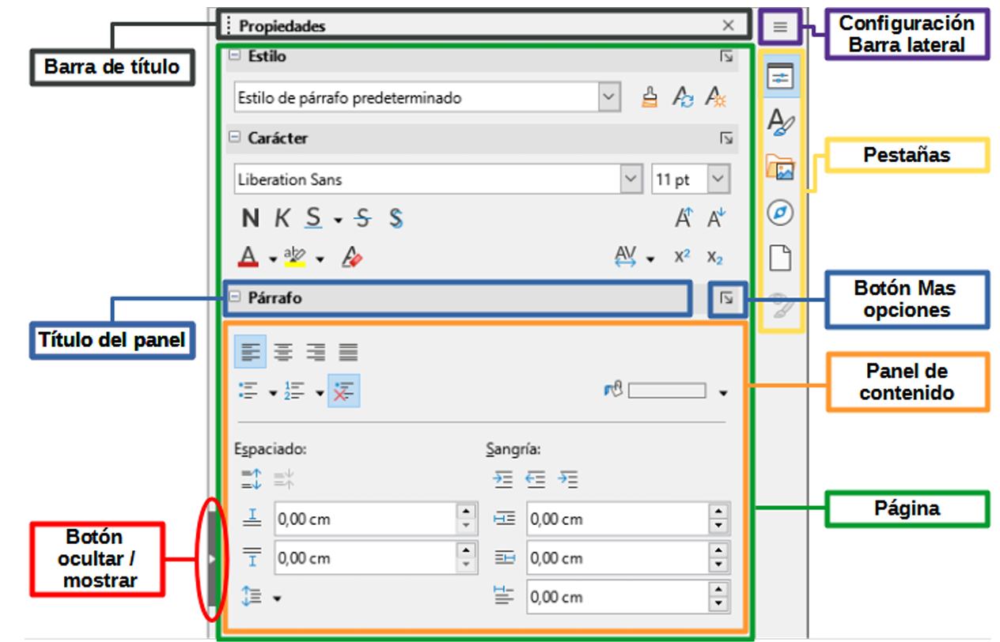

Uno de los primeros sitios en los que empezaron a utilizarse los ordenadores fue en las oficinas, debido a la gran cantidad de documentos, apuntes y datos que se generan a diario. 
Desde finales del siglo XIX se han utilizado varios tipos de máquinas mecánicas para escribir documentos en las oficinas, las últimas eran electrónicas y se llamaban "procesadores de texto" e incorporaban funciones como borrado, sinónimos, alineación automática, etc.
Pronto se vio la gran utilidad que aportaban los ordenadores en las oficinas y empezaron a crearse programas específicos para determinadas tareas: escribir textos, guardar fichas de datos, registrar la contabilidad, etc.
A la aplicación de la informática a la oficina se le dio el nombre de ofimática. (Oficina automática).Algunas empresas vendían esos programas en paquetes, a los que se les llamó suites ofimáticas.
A la aplicación de la informática a la oficina se le dio el nombre de ofimática. (Oficina automática). 
Algunas empresas vendían esos programas en paquetes, a los que se les llamó suites ofimáticas.
Las suites ofimáticas actuales suelen integrar al menos los siguientes programas:
Procesador de textos: Permite crear documentos con un aspecto profesional; suelen disponer de revisión ortográfica, inclusión de tablas, imágenes, etc.
Programa de presentaciones: Se utiliza para realizar un pase de diapositivas de imágenes y/o texto, con efectos de transición, música, etc.
Base de datos: Permite organizar y consultar gran cantidad de datos (Nombres, direcciones, inventarios, etc).
Hoy en día, la suite ofimática más conocida es la de Microsoft Office, que engloba el procesador de textos Word, la hoja de cálculo Excel, el programa de presentaciones Powerpoint y la base de datos Access, además de otros programas para la gestión del correo electrónico, gestión de imágenes, etc.
Existen otras suites ofimáticas: una de las más populares en la actualidad es la suite LibreOffice.org, que es similar y compatible con Microsoft Office y además tiene la ventaja de ser gratuita. 
Existen versiones para varios idiomas y sistemas operativos (Linux, Mac OS X, Windows, etc.) que podemos descargar de la siguiente dirección: https://es.libreoffice.org/
La suite ofimática OpenOffice.org agrupa el procesador de textos Writer, la hoja de cálculo Calc, el programa de presentaciones Impress, y la base de datos Base, etc.
Y por último, existe la suite ofimática de Google Docs , que además de ser gratuita, tiene la ventaja de ser completamente on-line, por lo que está siendo muy utilizada tanto en el ámbito educativo como empresarial.
Presenta varias ventajas, la primera es que no necesita ser instalada, por lo que no ocupa espacio en nuestro dispositivo, siendo multiplataforma, ya que solo es necesario un navegador de Internet para ejecutarla.
Otra ventaja es que permite el trabajo cooperativo, pudiendo varias personas trabajar en un mismo documento simultáneamente.
En este tema estudiaremos el procesador de textos de OpenOffice y en los siguientes temas, las demás aplicaciones. Todo lo que aprendamos es trasladable a las demás suites.
Se abrirá la ventana de LibreOffice Writer con el siguiente aspecto.
Partes de la ventana principal de Writer
A continuación explicaremos los elementos de los que está compuesta la ventana principal.
Título
La barra de título se encuentra en la parte superior de la ventana Writer.
Muestra el nombre de archivo del documento en uso. Cuando al documento no se le ha asignado un nombre (está en la memoria, pero no se ha guardado en el disco), aparecerá como Sin título N, donde N es un número. Los documentos sin título se numeran en el orden en que se crean.
üëâ Ejemplo: si escribes algo y aún no lo has guardado, arriba pondrá Sin t√≠tulo 1. Cuando lo guardes deberás indicar el nombre.
Menús
En el menú se agrupan por categorías las órdenes que nos ayudan en el trabajo con los documentos.
Al pulsar con el botón izquierdo del ratón en uno de los menús se despliega un submenú para mostrar las diversas órdenes, estas pueden:
Ejecutar directamente una acción, como Cerrar o Guardar, en el menú Archivo.
Abrir otros menús. Se indican mediante una flecha que apunta hacia la derecha.
üëâ Si haces clic en un menú, se despliega y puedes elegir lo que necesites.
Barra lateral
La Barra lateral normalmente aparece abierta de manera predeterminada en el lado derecho de la ventana de Writer, con ella puede acceder rápidamente a muchas de las funciones del programa. Si no se muestra, seleccione Ver → Barra lateral en el menú para mostrarla.
La Barra lateral de Writer contiene seis páginas: Propiedades, Estilos (se muestra como Estilos y Formato en algunas instalaciones), Galería, Navegador, Página e Inspector de estilos.
Cada página se puede abrir haciendo clic en su icono correspondiente en la barra de pestañas a su derecha.
Las barras de herramientas y las páginas de la Barra lateral comparten muchas funciones. Una página en esta barra es como una combinación de barra de herramientas y controles de diálogos. Por ejemplo, los iconos para cambiar la letra a negrita o cursiva existen tanto en la barra de herramientas Formato como en el panel Carácter de la página Propiedades.

Elementos de la Barra lateral
Barra de estado
La Barra de estado de Writer se encuentra en la parte inferior del espacio de trabajo.
Proporciona información sobre el documento y formas de cambiar rápidamente algunas características del documento. Se puede ocultar desmarcándo Barra de estado en el menú Ver.
Barra de estado de Writer
Escala
Para cambiar la ampliación de la vista arrastre el deslizador de Escala, haga clic en los signos + y – o haga clic con el botón derecho del ratón en el Factor de escala para mostrar una lista de los valores de ampliación ya establecidos.
 El procesador de textos¶
El procesador de textos¶